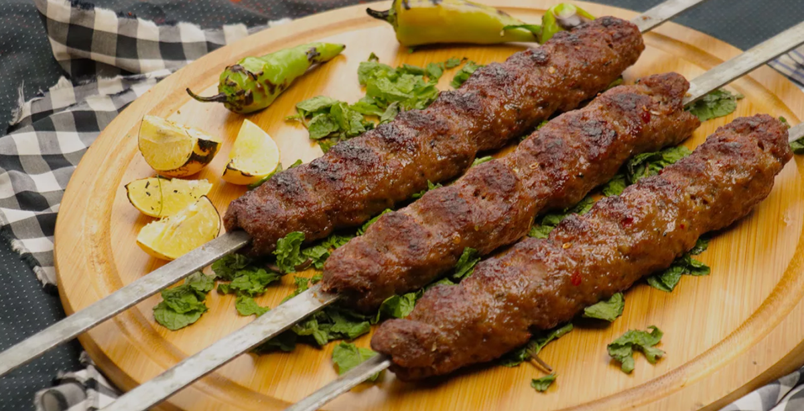
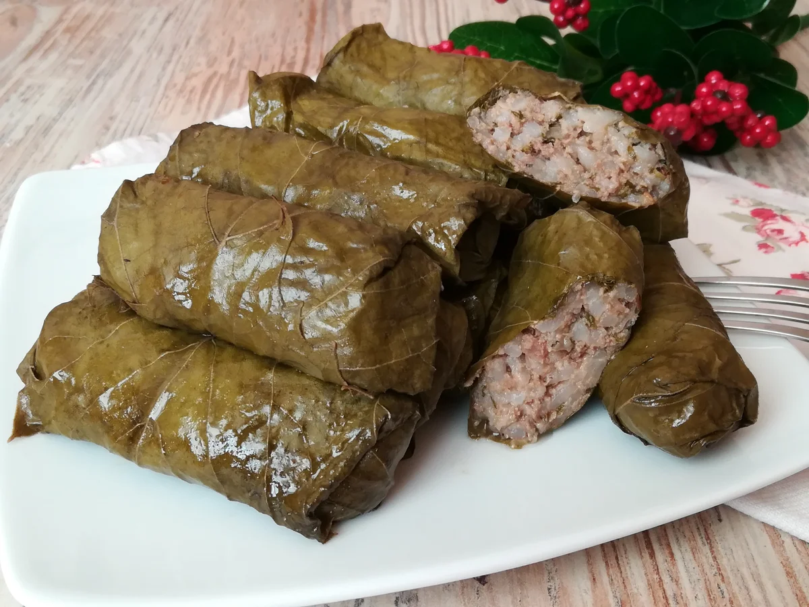

Вкусный блог!
Турецкая кухня
Турецкая кухня славится своим многообразием и богатым вкусом, используя множество специй и свежих ингредиентов.
Мы представляем вам три наших любимых рецепта!
| Изображение: | Название блюда: | Рецепт: |
|  | Кебаб | Ингредиенты:
мясо (баранина или говядина) — 500 г;
лук — 1 шт.;
специи (паприка, черный перец, зира) — по вкусу;
соль — по вкусу;
растительное масло — для жарки.
Приготовление: Мясо нарезать на куски, замариновать с луком и специями на несколько часов. Затем нанизать на шампуры и жарить на гриле или сковороде до готовности. Подавать с лепешками и свежими овощами. Приятного аппетита! |
|  | Долма | Ингредиенты:
виноградные листья — 300 г;
рис — 200 г;
фарш (мясной или овощной) — 400 г;
лук — 1 шт.;
специи и зелень — по вкусу.
Приготовление: Рис отварить до полуготовности. Лук мелко нарезать и обжарить на сковороде. Смешать рис с фаршем, добавить специи и зелень. Завернуть начинку в виноградные листья и варить в бульоне до готовности. Приятного аппетита! |
 |
Баклава | Ингредиенты:
тесто для пирога (фило) — 500 г;
грецкие орехи — 300 г;
сахар — 200 г;
мёд — 100 г;
растительное масло — для смазывания.
Приготовление: Орехи измельчить, смешать с сахаром. Листки теста смазывать маслом, укладывать слоями, чередуя с ореховой смесью. Нарезать на квадраты и выпекать до золотистого цвета. Полить медом после выпекания для сладости. Приятного аппетита! |